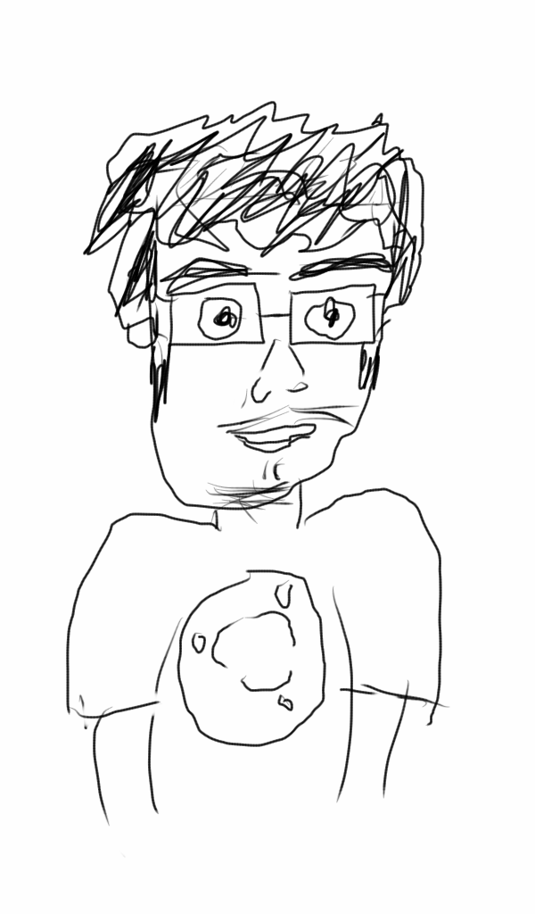

<section class="home-intro">
    <h2 class="tagline text-center">open source for all</h2>
    <p>The Pace Linux User Group is a not simply a club for Linux users at a single school. Its goal is to serve as an inspiration for students in other schools to start their own user groups! </p>

    <ul class="stats">
        <li>12 members</li>
        <li>1 meeting</li>
        <li><span id="cobble">64</span> cobblestone mined in Minecraft</li>
    </ul>
</section>

